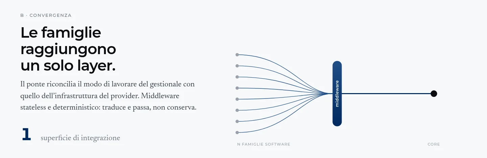

Tradurre una volta per famiglia
Abbiamo concentrato in un adattatore le particolarità di ogni famiglia di gestionali. La parte rivolta al fornitore riceve le operazioni attraverso un’interfaccia comune. Una modifica legata a un gestionale può così essere affrontata nel punto in cui nasce.

